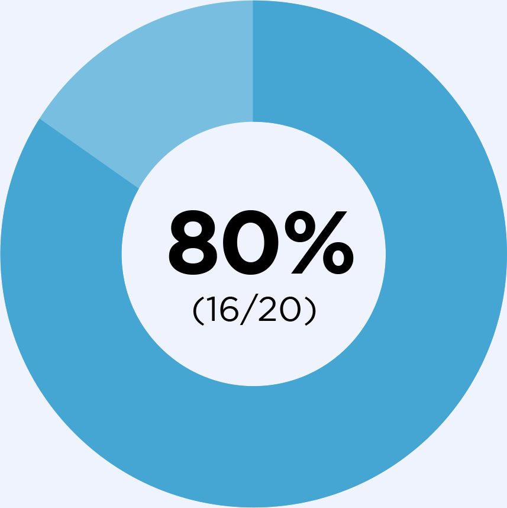
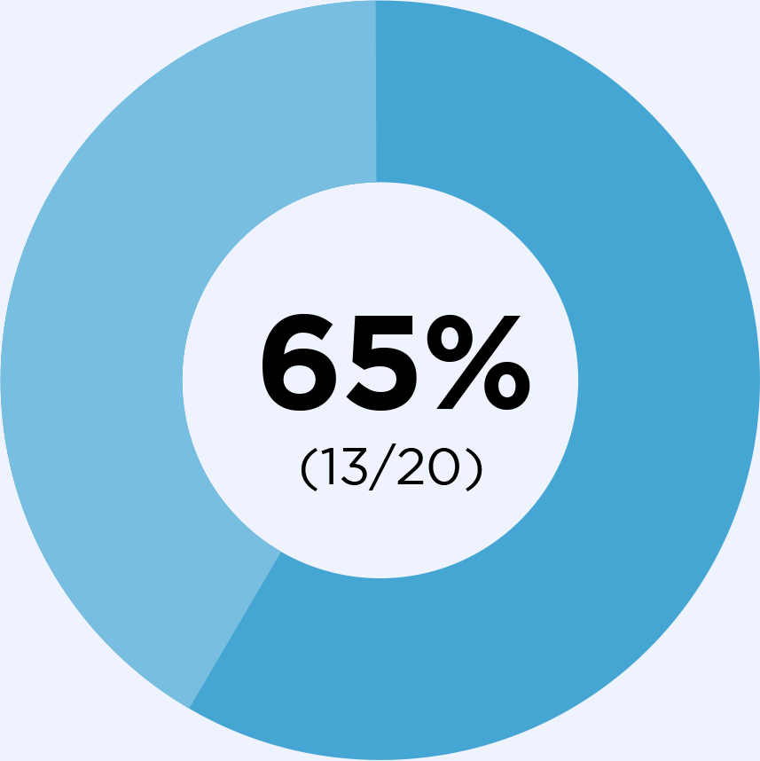

Thalassemia Phase 2 Efficacy Outcomes1
STATUS: CORE STUDY COMPLETED
EXTENSION ONGOING
EXTENSION ONGOING
In patients with non–transfusion-dependent α- and β-thalassemia

Primary Endpoint
16/20 (5/5 α-thalassemia and 11/15 β-thalassemia) patients achieved a >1.0 g/dL increase in Hb concentration from BL at >1 assessments between Weeks 4–12 (inclusive).

Secondary Endpoint
13/20 (5/5 α-thalassemia and 8/15 β-thalassemia) patients achieved a sustained hemoglobin responsea.
- During Weeks 12-24, the mean hemoglobin change from baseline was 1.3 g/dL
- Markers of hemolysis and erythropoiesis – including indirect bilirubin, lactate dehydrogenase and erythropoietin – demonstrated improvements that were consistent with the hemoglobin increase in both α- and β-thalassemia patients